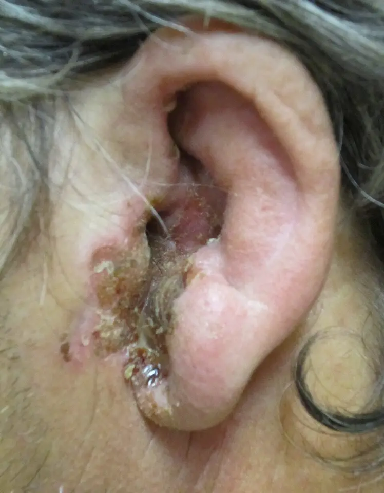

DX.7 — Otite externe nécrosante
L’otite externe nécrosante est une ostéomyélite de la base du crâne qui peut tuer jusqu’à 50 % des patients selon les Hôpitaux universitaires de Genève (HUG) S1. Toute otite externe d’un diabétique, d’un immunodéprimé ou d’un patient irradié impose un avis ORL (oto-rhino-laryngologique) immédiat, puis une hospitalisation pour antibiotique intraveineux S1S2.
1. Définition
L’otite externe nécrosante est une infection invasive du conduit auditif externe, potentiellement mortelle, qui peut s’étendre à l’os et provoquer une ostéomyélite de la base latérale du crâne S4. Les Hôpitaux universitaires de Genève (HUG) la décrivent comme une ostéomyélite de l’os temporal, aussi appelée otite maligne nécrosante S1S2.
2. Épidémiologie (Suisse, puis Europe)
L’équipe ORL (oto-rhino-laryngologique) d’Innsbruck indique que l’incidence reste impossible à chiffrer, faute de données et de critères diagnostiques appliqués partout S4. Les HUG la décrivent comme rare, mais elle peut tuer jusqu’à 50 % des patients selon leur protocole de 2022 S1S2. Cette borne haute provient d’une série ancienne citée par les HUG ; le médecin la lit comme un ordre de grandeur de gravité S2.
En Angleterre, les données hospitalières nationales montrent une incidence en hausse continue de 2002 à 2024, avec une baisse de 30 % pendant la pandémie de COVID-19 (maladie à coronavirus 2019) S7. Cette hausse suit le vieillissement de la population et l’incidence nationale du diabète, alors que la résistance aux antibiotiques n’y contribue pas de façon significative S7. Le tableau des chiffres et des terrains précise la population de chaque donnée.
Chiffres et terrains
| Donnée | Valeur | Population et mesure | Source |
|---|---|---|---|
| Mortalité | Jusqu’à 50 % | Protocole genevois, borne haute ancienne | S1S2 |
| Évolution de l’incidence | Hausse continue 2002–2024 | Statistiques hospitalières anglaises | S7 |
| Effet de la pandémie | Baisse de 30 % | Même série anglaise | S7 |
| Âge | Pic après 65 ans | Revue autrichienne 2025 | S4 |
| Sexe | Hommes plus touchés | Revue autrichienne 2025 | S4 |
| Germe | P. aeruginosa dans 95 % des cas | Enseignement genevois 2019 | S2 |
Par déduction, la prévalence croissante du diabète et l’âge de la population suisse justifient d’attendre aussi plus de cas en Suisse, comme le prévoient les auteurs autrichiens S4.
Le diabète, surtout mal équilibré, l’insuffisance rénale chronique, l’immunosuppression et l’âge avancé favorisent la maladie S4S1. Chez l’enfant diabétique, le nerf facial se trouve plus près des fissures de Santorini, si bien que la paralysie faciale survient plus tôt S4. La fenêtre des terrains à risque précise la conduite propre à chacun.
Terrains à risque et conduite
| Terrain | Pourquoi il compte | Conduite |
|---|---|---|
| Diabète décompensé | Facteur principal S4S1 | Avis ORL immédiat devant toute otite externe S1 |
| Immunosuppression (VIH, chimiothérapie) | Facteur reconnu S1 | Avis ORL immédiat S1 |
| Radiothérapie de la région | Terrain à risque des HUG S1 | Avis ORL immédiat S1 |
| Âge supérieur à 65 ans | Pic de la maladie S4 | Examiner le conduit au microscope |
| Insuffisance rénale chronique | Facteur favorisant S4 | Adapter les doses d’antibiotique |
| Enfant diabétique | Paralysie faciale plus précoce S4 | Avis ORL sans délai |
| Immunosuppression profonde | Infection fongique invasive plus fréquente S4 | Biopsie et culture fongique S4 |
3. Physiopathologie
Le conduit auditif externe comprend une partie externe cartilagineuse et une partie interne osseuse S4. Le plancher cartilagineux a de petites fissures, les fissures de Santorini, par lesquelles l’infection gagne la parotide et l’articulation temporo-mandibulaire S4. Un foramen tympanique persistant, variante embryologique du plancher osseux, constitue une autre voie vers la fosse infratemporale S4.
Les HUG placent les granulations typiques à la jonction ostéo-cartilagineuse du conduit, là où commence l’atteinte osseuse S1. L’infection atteint ensuite, comme une mastoïdite, la base du crâne, les nerfs crâniens, les sinus veineux et l’espace intracrânien S4. Le germe Pseudomonas aeruginosa domine, car il aime le milieu humide, forme un biofilm et envahit les tissus S4.
Le conduit auditif externe, du cartilage à l’os. Le schéma en couleurs montre le conduit auditif externe, entouré de cartilage en dehors puis d’os en dedans, jusqu’au tympan S8S4.

Lisez d’abord seul ce cliché (le conduit auditif externe, du cartilage à l’os) : cherchez vous-même les signes.
La copie annotée (le conduit auditif externe, du cartilage à l’os) numérote les repères que la lecture guidée décrit.
- 1. La partie externe du conduit repose sur du cartilage, où les fissures de Santorini laissent passer l’infection S4.
- 2. La jonction ostéo-cartilagineuse porte les granulations typiques de la forme nécrosante S1.
- 3. Le tympan ferme le conduit ; l’infection nécrosante contourne cette barrière par l’os temporal S4.
- Le schéma ne montre ni les fissures ni le nerf facial ; le médecin doit se les représenter S4.
Ce que l’image décide. Le médecin regarde le plancher du conduit à la jonction ostéo-cartilagineuse, car une granulation y signe la forme nécrosante S1.
Les fenêtres décrivent les voies d’extension, les germes en cause et la chaîne du mécanisme au geste.
Voies d’extension et complications
| Voie | Structure atteinte | Traduction clinique |
|---|---|---|
| Fissures de Santorini | Parotide, articulation temporo-mandibulaire S4 | Douleur à la mastication S4, trismus S1 |
| Foramen tympanique persistant | Fosse infratemporale S4 | Extension profonde sans signe externe |
| Os temporal, mastoïde | Base latérale du crâne S4 | Ostéomyélite S1S4 |
| Base du crâne | Nerf facial, puis nerfs IX, X, XI, XII S4 | Paralysie faciale, troubles de déglutition et de la voix |
| Espace intracrânien | Méninges, cerveau S4 | Méningite, abcès, empyème S4 |
| Sinus veineux | Sinus dural, veine jugulaire interne S4 | Thrombose septique S4 |
| Pointe de la mastoïde, cou | Muscle sterno-cléido-mastoïdien, espaces profonds S4 | Phlegmon cervical S4 |
| Oreille interne | Labyrinthe S4 | Surdité, troubles de l’équilibre S4 |
Germes en cause
| Germe | Fréquence | Particularité | Conséquence |
|---|---|---|---|
| Pseudomonas aeruginosa | 95 % S2 | Biofilm, invasion tissulaire S4 | Antibiotique anti-Pseudomonas S4 |
| Staphylococcus aureus | Rare S1S2 | Germe possible S1 | Adapter à l’antibiogramme S4 |
| Aspergillus fumigatus | Rare S1S2 | Immunodépression profonde S4 | Antifongique, avis infectiologique S4 |
| Candida | Rare S4 | Résistances croissantes S4 | Antifongique adapté à l’espèce S4 |
| Infection mixte | Non rare S4 | Bactérie et champignon associés S4 | Traitement interdisciplinaire S4 |
Le groupe genevois de Vourexakis rappelle que l’image du diabétique infecté par Pseudomonas n’est pas toujours juste ; d’autres germes et d’autres terrains existent S3.
Du mécanisme au signe, puis au geste
| Mécanisme | Signe | Geste |
|---|---|---|
| Infection qui envahit l’os | Douleur intense, nocturne, disproportionnée S1 | Avis ORL immédiat S1 |
| Tissu de granulation | Granulation à la jonction ostéo-cartilagineuse S1 | Biopsie pour culture et histologie S1S4 |
| Atteinte de l’articulation temporo-mandibulaire | Trismus, palpation mandibulaire douloureuse S1 | Imagerie de la base du crâne S1 |
| Atteinte des nerfs crâniens | Paralysie faciale S1S4 | Imagerie, chirurgie discutée S4 |
| Biofilm à Pseudomonas | Résistance aux gouttes S4 | Antibiotique systémique prolongé S4 |
4. Démarche diagnostique
La démarche part d’une otite externe qui ne guérit pas : avec un traitement bien conduit, les HUG attendent la guérison en 7 jours, au plus en 14 jours S1. Au-delà, ou d’emblée chez un patient diabétique, immunodéprimé ou irradié, le médecin cherche la forme nécrosante et demande un avis ORL immédiat S1. Le consensus européen COSNOE (Core Outcome Set for Necrotising Otitis Externa) exige ensuite l’imagerie, la microbiologie et l’histologie pour confirmer le diagnostic S5.
Les étapes de la démarche sont détaillées dans un tableau ; le diagnostic différentiel et l’erreur classique complètent la démarche.
Étapes de la démarche
| Étape | Question | Outil | Décision |
|---|---|---|---|
| 1. Terrain | Diabète, immunosuppression, radiothérapie, grand âge ? | Anamnèse S1S4 | Oui : avis ORL immédiat devant toute otite externe S1 |
| 2. Évolution | Otite externe non guérie après 14 jours de traitement local ? | Calendrier du traitement S1 | Oui : chercher la forme nécrosante S1 |
| 3. Douleur | Otalgie nocturne, disproportionnée à l’examen ? | Anamnèse S1 | Oui : forte suspicion S1 |
| 4. Conduit | Granulation à la jonction ostéo-cartilagineuse ? | Otoscopie, microscope S1 | Oui : forte suspicion S1 |
| 5. Extension | Trismus, paralysie faciale, autre nerf crânien ? | Examen neurologique S1 | Oui : forme avancée S5 |
| 6. Confirmation | Tomodensitométrie et IRM (imagerie par résonance magnétique) positives ? Cancer exclu ? | Imagerie, biopsie, culture S5 | Diagnostic retenu selon COSNOE S5 |
Diagnostic différentiel
| Diagnostic | Indice | Conduite |
|---|---|---|
| Otite externe aiguë simple (DX.1) | Guérit en 7 à 14 jours sous gouttes S1 | Gouttes, contrôle à 48–72 heures S1 |
| Carcinome du conduit auditif | Diagnostic différentiel le plus important S4 | Biopsie rapide S4 |
| Otomycose | Dépôts blancs ou noirs, prurit S1 | Nettoyage, antifongique local S1 |
| Zona otique (DX.6) | Vésicules et paralysie faciale S1 | Antiviral, avis ORL S1 |
| Otite moyenne aiguë perforée (DX.2) | Perforation, contexte respiratoire S1 | Prise en charge de l’otite moyenne S1 |
| Furoncle du conduit | Lésion pustuleuse localisée du tiers externe S1 | Incision selon accès S1 |
| Trouble temporo-mandibulaire (DX.8) | Conduit et tympan calmes S1 | Repos articulaire S1 |
Erreur classique : renouveler les gouttes
L’erreur consiste à renouveler les gouttes chez un diabétique âgé dont l’otite traîne, au lieu de chercher une granulation et de demander un avis ORL S1. Les auteurs d’Innsbruck rappellent que l’otite nécrosante répond mal au traitement local, si bien que la persistance doit alerter S4. Une otite qui dépasse 14 jours de traitement bien conduit impose donc un autre diagnostic ou un échec, jamais un simple renouvellement S1.
5. Anamnèse ciblée et drapeaux rouges
L’otalgie est intense, souvent nocturne, et disproportionnée par rapport à l’aspect du conduit S1. L’otorrhée persiste malgré le traitement local, et la mastication devient douloureuse quand l’articulation temporo-mandibulaire est atteinte S4. Fièvre, céphalées et malaise peuvent s’y ajouter, mais leur absence ne rassure pas S1.
Le médecin recherche le diabète et son équilibre, l’immunosuppression, une radiothérapie de la région et la durée des gouttes déjà reçues S1. Les questions ciblées et les drapeaux rouges figurent dans deux tableaux.
Questions ciblées
| Question | Réponse inquiétante | Conséquence |
|---|---|---|
| La douleur réveille-t-elle la nuit ? | Oui S1 | Forme nécrosante suspecte |
| Depuis combien de temps les gouttes sont-elles prises ? | Plus de 14 jours sans guérison S1 | Échec ou autre diagnostic S1 |
| Mâcher fait-il mal ? | Oui S4 | Atteinte temporo-mandibulaire |
| Le diabète est-il équilibré ? | Non, glycémies hautes S1S4 | Terrain principal |
| Un traitement immunosuppresseur ou une chimiothérapie est-il en cours ? | Oui S1 | Avis ORL immédiat S1 |
| La région a-t-elle été irradiée ? | Oui S1 | Avis ORL immédiat S1 |
| Le visage, la voix ou la déglutition ont-ils changé ? | Oui S1S4 | Atteinte des nerfs crâniens |
Drapeaux rouges
| Drapeau rouge | Signification | Conduite |
|---|---|---|
| Paralysie faciale | Atteinte du nerf facial, nerf le plus souvent touché S4 | Hospitalisation S1 |
| Dysphonie, troubles de déglutition | Atteinte des nerfs IX, X ou XII S1S4 | Hospitalisation S1 |
| Céphalées, fièvre, raideur de nuque | Méningite, abcès intracrânien S4 | Urgences, imagerie injectée S4 |
| Trismus | Atteinte temporo-mandibulaire S1 | Imagerie S1 |
| Surdité, vertiges | Labyrinthite S4 | Avis ORL urgent S4 |
| Tuméfaction cervicale | Phlegmon ou thrombophlébite jugulaire S4 | Imagerie injectée S4 |
6. Examen physique ciblé, région par région
L’examen parcourt six régions, chacune dans sa fenêtre : état général, pavillon et région périauriculaire, conduit et tympan. Deux autres fenêtres traitent la mâchoire et la parotide, puis les nerfs crâniens et les méninges.
Région 2 : pavillon et région périauriculaire
Région 3 : conduit auditif externe
| Aspect | Signification | Conduite |
|---|---|---|
| Granulation à la jonction ostéo-cartilagineuse | Signe de la forme nécrosante S1 | Biopsie pour culture et histologie S1S4 |
| Granulation qui obstrue le conduit | Forme évoluée S4 | Avis ORL immédiat S1 |
| Œdème, otorrhée | Critères du consensus COSNOE S5 | Prélèvement microbiologique S4 |
| Croûtes et os exposé au plancher | Autre diagnostic possible, à séparer par l’imagerie S4 | Imagerie S4 |
Région 6 : nerfs crâniens et méninges
| Nerf ou signe | Test | Anomalie | Interprétation |
|---|---|---|---|
| VII (facial) | Plisser le front, fermer les yeux, sourire | Paralysie S1 | Le nerf le plus souvent atteint S4 |
| IX et X | Déglutition, voile, voix | Dysphagie, dysphonie S1 | Atteinte de la base du crâne S4 |
| XI | Hausser les épaules | Faiblesse S1 | Atteinte de la base du crâne S4 |
| XII | Tirer la langue | Déviation S1 | Atteinte de la base du crâne S4 |
| VI | Regard latéral | Diplopie S1 | Extension vers l’apex pétreux |
| Méninges | Raideur de nuque | Signe méningé | Méningite S4 |
Otite externe sévère. La photographie en couleurs montre une otite externe sévère, avec un orifice du conduit rétréci et des croûtes qui débordent sur la peau S9.

Lisez d’abord seul ce cliché (otite externe sévère) : cherchez vous-même les signes.
La copie annotée (otite externe sévère) numérote les repères que la lecture guidée décrit.
Ce que l’image décide. Chez un diabétique ou un immunodéprimé, ce tableau impose un avis ORL immédiat et la recherche d’une granulation au microscope S1.
7. Approche syndromique
Le syndrome associe une otalgie intense et nocturne, une otorrhée rebelle et un terrain immunodéprimé, chez un sujet le plus souvent âgé S1S4. L’apparition d’une paralysie faciale ou d’un trismus fait basculer ce syndrome local vers celui d’une ostéomyélite de la base du crâne S1S4. La grille syndromique sépare la forme nécrosante de ses imitateurs.
Grille syndromique
| Association | Syndrome | Diagnostic |
|---|---|---|
| Otite externe, terrain fragile, douleur nocturne, granulation S1 | Infection invasive du conduit | DX.7 Otite externe nécrosante |
| Même tableau et paralysie de nerfs crâniens S1S4 | Ostéomyélite de la base du crâne | DX.7, forme avancée |
| Otite externe chez un sujet sain, guérison en 7 jours S1 | Inflammation superficielle du conduit | DX.1 Otite externe aiguë |
| Granulation, perte de poids, biopsie suspecte S4 | Tumeur du conduit | Carcinome du conduit, DX.10 si oropharynx |
| Vésicules, paralysie faciale, sujet de tout âge S1 | Atteinte virale | DX.6 Zona otique |
| Otalgie, conduit et tympan calmes, craquement articulaire S1 | Douleur projetée | DX.8 Trouble temporo-mandibulaire |
8. Diagnostic positif et critères
Le consensus COSNOE de 2024 retient 12 critères en 6 thèmes, tous obligatoires, sans critère secondaire ni gradué S5. Le tableau des critères COSNOE décrit chacun d’eux avec son interprétation.
Critères diagnostiques COSNOE
| Thème | Critère | Remarque |
|---|---|---|
| Signes et symptômes | Œdème, otorrhée, granulation S5 | Granulation à chercher au microscope S1 |
| Douleur | Otalgie, otalgie nocturne S5 | Douleur disproportionnée selon les HUG S1 |
| Examens | Microbiologie, même négative S5 | Biopsie préférée à l’écouvillon S4 |
| Examens | Histologie qui exclut un cancer S5 | Carcinome du conduit à exclure S4 |
| Examens | Tomodensitométrie et IRM positives S5 | Les deux examens sont exigés S5 |
| Évolution | Symptômes persistants malgré au moins 2 semaines de traitement local ou systémique S5 | Concorde avec les 14 jours des HUG S1 |
| Terrain | Au moins un facteur d’immunité diminuée S5 | Diabète, immunosuppression, âge S1 |
| Maladie avancée | Indicateurs à rapporter s’ils existent, sans être obligatoires S5 | Paralysie des nerfs crâniens, complications S4 |
La revue autrichienne rappelle qu’aucune recommandation fondée sur les preuves n’existe encore, et elle propose des critères modifiés d’après Hodgson S4. Par déduction, le médecin de premier recours n’attend pas ces critères complets ; il adresse le patient dès la suspicion clinique S1S5.
9. Examens complémentaires
La biologie comprend la protéine C réactive (CRP), la vitesse de sédimentation, la fonction rénale et l’hémoglobine glyquée (HbA1c) S4. La fonction rénale fait aussi varier les doses fixées par l’AIPS (information professionnelle suisse) de la ceftazidime AIPS 46050. La microbiologie et la biopsie de la granulation identifient le germe et excluent le cancer S4S5. L’imagerie confirme l’atteinte osseuse, puis l’imagerie fonctionnelle juge la réponse au traitement S4.
Chaque examen a sa fenêtre : biologie, microbiologie, histologie, imagerie de diagnostic et imagerie de suivi.
Biologie
| Examen | Résultat | Interprétation | Conduite |
|---|---|---|---|
| Vitesse de sédimentation | Élevée chez environ deux tiers des patients au diagnostic S4 | Normale n’exclut rien | Suivre l’évolution sous traitement S4 |
| CRP | Élevée chez un peu plus de la moitié S4 | Valeur diagnostique faible S4 | Suivre l’évolution sous traitement S4 |
| Fonction rénale | Clairance diminuée | Terrain favorisant S4 | Adapter les doses AIPS 46050 |
| HbA1c | Élevée, par exemple 8,1 % dans le cas autrichien S4 | Diabète mal équilibré | Prise en charge diabétologique S4 |
Microbiologie
| Rubrique | Contenu |
|---|---|
| Indication | Toute otite externe rebelle au traitement, le plus tôt possible S4 |
| Prélèvement | Écouvillon, et surtout biopsie de la granulation S4 |
| Piège | L’écouvillon superficiel manque souvent des germes, surtout après des antiseptiques locaux S4 |
| Interprétation | P. aeruginosa domine ; champignons chez l’immunodéprimé S4 |
| Conduite | Antibiogramme, puis désescalade stricte S4 |
Histologie
| Rubrique | Contenu |
|---|---|
| Indication | Toute forme suspecte, car le carcinome du conduit reste le principal diagnostic différentiel S4 |
| Prélèvement | Biopsie de la granulation S4 |
| Interprétation | L’histologie doit exclure un cancer pour retenir le diagnostic S5 |
| Conduite | Cancer : filière oncologique ; inflammation : traitement anti-infectieux |
Imagerie de diagnostic
| Examen | Indication | Ce qu’il montre | Conduite |
|---|---|---|---|
| Tomodensitométrie du rocher | Examen de première ligne, plus rapide et moins coûteux S4 | Érosions osseuses du plancher du conduit et de la mastoïde S4 | Confirmer l’atteinte osseuse |
| IRM | Extension aux tissus mous S4 | Atteinte de la base du crâne S4 | Exigée avec la tomodensitométrie par COSNOE S5 |
| Tomodensitométrie ou IRM injectée | Signes d’extension avancée S4 | Abcès, thrombose, atteinte intracrânienne S4 | Hospitalisation, chirurgie discutée S4 |
Imagerie de suivi
| Examen | Rôle | Limite | Conduite |
|---|---|---|---|
| Tomodensitométrie et IRM | Diagnostic initial S4 | Montrent des lésions réactives après la guérison S4 | Ne pas s’en servir pour arrêter l’antibiotique |
| TEP (tomographie par émission de positons) au fluorodésoxyglucose (FDG) | Méthode de choix pour juger la réponse S4 | Disponibilité hospitalière | Aide à décider la fin de l’antibiotique S4 |
| Scintigraphies osseuse et au gallium | Méthodes anciennes S4 | Remplacées par la TEP S4 | Usage résiduel |
Culture de Pseudomonas aeruginosa sur gélose au sang. La photographie en couleurs montre des colonies de P. aeruginosa ensemencées en stries sur une gélose au sang S10.
Lisez d’abord seul ce cliché (culture de pseudomonas aeruginosa sur gélose au sang) : cherchez vous-même les signes.
La copie annotée (culture de pseudomonas aeruginosa sur gélose au sang) numérote les repères que la lecture guidée décrit.
- Une culture négative ne suffit pas à écarter le diagnostic, car le consensus accepte une microbiologie négative S5.
Ce que l’image décide. Le médecin obtient une culture, de préférence sur biopsie, avant de fixer l’antibiotique définitif S4.
10. Arbre décisionnel
- Si une otite externe touche un patient diabétique décompensé, immunodéprimé ou irradié, le médecin demande un avis ORL immédiat S1.
- Si l’otite externe dépasse 14 jours de traitement bien conduit, le médecin cherche une forme nécrosante, un autre diagnostic ou un défaut d’application S1.
- Si la douleur est nocturne et disproportionnée, ou si une granulation existe, le médecin adresse le patient le jour même à l’ORL S1.
- Si une paralysie de nerf crânien, un trismus ou des signes méningés existent, le médecin hospitalise le patient S1S4.
- Si l’ORL confirme la suspicion, il prélève une biopsie pour culture et histologie, et il demande une tomodensitométrie et une IRM S1S5.
- Si l’histologie montre un cancer, le patient quitte cet arbre pour la filière oncologique S5.
- Sinon, l’équipe traite par un antibiotique intraveineux actif sur Pseudomonas, puis l’adapte à l’antibiogramme S1S4.
- Si la TEP au FDG montre une maladie encore active, l’équipe prolonge le traitement au-delà de 6 semaines S4.
- Si l’évolution reste défavorable ou si des nerfs crâniens sont atteints, l’équipe discute la chirurgie S4.
11. Prise en charge selon les recommandations suisses
11.A But
Le traitement vise l’éradication de l’ostéomyélite, la protection des nerfs crâniens et la survie, en évitant la rechute S4. Il corrige aussi le terrain, car le contrôle du diabète fait partie du traitement S4.
11.B Moyens
Le traitement repose sur un antimicrobien systémique ciblé, un traitement local et la correction du terrain prédisposant S4. Les HUG hospitalisent le patient pour un antibiotique intraveineux après un nettoyage et une biopsie pour culture S1S2. La conduite chronologique précise l’ordre des gestes.
Conduite chronologique
| Moment | Geste | Responsable |
|---|---|---|
| Jour 0, cabinet | Reconnaître le terrain et la douleur, appeler l’ORL S1 | Médecin de premier recours |
| Jour 0, hôpital | Nettoyage, biopsie pour culture et histologie S1S4 | ORL |
| Jours 0 à 2 | Tomodensitométrie et IRM du rocher S5S4 | Radiologue |
| Dès les prélèvements | Antibiotique intraveineux anti-Pseudomonas S1S4 | ORL et infectiologue |
| Antibiogramme reçu | Désescalade stricte vers la molécule la plus ciblée S4 | Infectiologue |
| Semaines suivantes | Relais oral possible, contrôle du diabète S6S4 | Équipe hospitalière |
| Fin prévue | TEP au FDG avant l’arrêt S4 | Équipe hospitalière |
Le traitement anti-infectieux se lit dans un tableau qui donne la molécule, la dose de l’AIPS (information professionnelle suisse), la durée et les critères d’échec. Les fiches détaillent la ceftazidime, la pipéracilline-tazobactam, la ciprofloxacine orale et les gouttes de ciprofloxacine.
Traitement anti-infectieux structuré
| Étape | Molécule | Dose AIPS | Durée | Contrôle | Critère d’échec |
|---|---|---|---|---|---|
| Empirique, intraveineux | Ceftazidime | Infections très sévères ou immunodéficience : 2 g toutes les 8 ou 12 heures ; dose réduite si la filtration glomérulaire baisse AIPS 46050 | Jusqu’à l’antibiogramme S4 | Fonction rénale, clinique AIPS 46050 | Douleur et otorrhée persistantes S4 |
| Empirique, intraveineux (alternative) | Pipéracilline-tazobactam | 4 g/0.5 g 3 à 4 fois par jour chez l’adulte AIPS 63001 | Jusqu’à l’antibiogramme S4 | Fonction rénale AIPS 63001 | Comme ci-dessus |
| Relais oral, germe sensible | Ciprofloxacine | Otite externe maligne : 2 × 750 mg par jour AIPS 47795 | 28 jours à 3 mois selon l’AIPS AIPS 47795 ; au moins 6 semaines selon la revue autrichienne S4 | Tendons, glycémie, aorte AIPS 47795 | Rechute après l’arrêt S4 |
| Local | Ciproxin HC (ciprofloxacine et hydrocortisone), gouttes | 3 gouttes 2 fois par jour pendant 7 jours dès 2 ans AIPS 54807 | 7 jours AIPS 54807 | Tympan intact AIPS 54807 | Aucun effet seul sur l’os S4 |
| Antalgie | Paracétamol | 500 à 1000 mg par prise, au plus 4000 mg par jour ; 3000 mg si la clairance vaut 10 à 50 ml/min AIPS 47503 | Selon la douleur | Foie, rein AIPS 47503 | Douleur nocturne persistante : réévaluer |
La revue autrichienne déconseille la fluoroquinolone empirique sans germe prouvé, à cause des alertes de sécurité et des résistances S4. Elle préfère d’emblée une bêta-lactamine active sur Pseudomonas, comme la ceftazidime, la pipéracilline-tazobactam ou le céfépime S4. La même revue cite pourtant l’association ceftazidime et ciprofloxacine dans sa conclusion ; le médecin retient la règle détaillée de son texte S4.
La revue systématique de Lodhi montre un premier traitement hospitalier dans 95 % des cas, une fluoroquinolone empirique dans 68 % et une voie intraveineuse dans 82 % S6. La même revue juge impossible de relier ces schémas aux résultats, car les études sont hétérogènes et à haut risque de biais S6. L’AIPS de Ciproxine fixe pour l’otite externe maligne 2 × 750 mg par jour pendant 28 jours à 3 mois AIPS 47795.
L’infection fongique demande un antifongique choisi avec l’infectiologue, car les résistances d’Aspergillus et de Candida augmentent S4. La chirurgie, du débridement à la mastoïdectomie et à la décompression faciale, est indiquée en cas d’échec du traitement conservateur ou d’atteinte des nerfs crâniens S4. L’oxygénothérapie hyperbare reste une option adjuvante dans les formes sévères, sans recommandation des sociétés savantes S4.
Critères d’échec et conduite
| Critère | Seuil ou signe | Conduite |
|---|---|---|
| Douleur et otorrhée | Persistance sous antibiotique adapté S4 | Revoir germe, dose, observance ; avis infectiologique |
| Nouveau nerf crânien atteint | Paralysie apparue sous traitement S4 | Chirurgie discutée S4 |
| Imagerie fonctionnelle | Activité persistante à la TEP S4 | Prolonger le traitement S4 |
| Rechute | Retour de l’otorrhée et de la douleur après l’arrêt S4 | Nouveau cycle intraveineux, puis relais oral S4 |
| Culture fongique | Champignon isolé S4 | Antifongique avec l’infectiologue S4 |
Les critères d’échec donnent le seuil de chaque situation.
Cas autrichien : déroulé réel
| Temps | Événement |
|---|---|
| Présentation | Homme de 80 ans, diabète de type 2 avec HbA1c à 8,1 %, otorrhée et céphalées intenses S4 |
| Examen | Granulation qui obstrue presque le conduit S4 |
| Imagerie | Érosions nécrotiques du plancher du conduit et de la mastoïde S4 |
| Traitement | Ceftazidime intraveineuse, gouttes de ciprofloxacine, prise en charge diabétologique S4 |
| Durée initiale | 14 jours intraveineux, puis lévofloxacine orale S4 |
| Rechute | 4 semaines après la sortie S4 |
| Second cycle | 2 semaines intraveineuses, puis 8 semaines orales S4 |
| Issue | Aucune rechute pendant plus de 2 ans de suivi ORL S4 |
Le cas autrichien montre comment une durée trop courte mène à la rechute.
Situations spéciales
Chez l’insuffisant rénal, l’AIPS de Fortam réduit la dose d’entretien après une dose initiale de 1 g dès que la filtration glomérulaire passe sous 50 mL/min AIPS 46050. Chez le sujet âgé, l’AIPS de Ciproxine signale un risque accru d’anévrisme et de dissection aortique ; le médecin pèse donc chaque fluoroquinolone AIPS 47795. Pendant la grossesse et l’allaitement, les AIPS limitent ces antibiotiques ; les fiches citent leurs phrases exactes AIPS 46050AIPS 47795AIPS 63001.
11.C Surveillance
Les signes cliniques, la CRP et la vitesse de sédimentation suivent mal l’activité de la maladie S4. La TEP au FDG associée à la tomodensitométrie ou à l’IRM reste le meilleur examen pour juger la réponse et décider l’arrêt S4. Le calendrier de surveillance précise chaque contrôle.
Calendrier de surveillance
| Moment | Contrôle | Seuil d’action | Action |
|---|---|---|---|
| Chaque jour à l’hôpital | Douleur, otorrhée, nerfs crâniens S4 | Aggravation S4 | Imagerie, chirurgie discutée S4 |
| Chaque semaine | CRP, vitesse de sédimentation, fonction rénale S4AIPS 46050 | Hausse ou clairance en baisse | Réévaluer, adapter les doses AIPS 46050 |
| Pendant tout le traitement | Glycémie S4 | Diabète déséquilibré | Ajuster le traitement du diabète S4 |
| Fin prévue | TEP au FDG S4 | Activité persistante S4 | Prolonger S4 |
| Après l’arrêt | Contrôles ORL rapprochés, à vie S4 | Rechute S4 | Nouveau traitement S4 |
11.D Pronostic
La maladie peut tuer jusqu’à 50 % des patients selon les HUG, chiffre ancien qui mesure la gravité d’une forme non traitée ou tardive S1S2. Un diagnostic tardif entraîne un risque de déficits neurologiques définitifs, à la surdité et aux complications intracrâniennes S4. La rechute reste fréquente après un traitement trop court, si bien que le suivi ORL dure toute la vie S4.
12. Prévention
Le médecin évite l’irrigation du conduit chez le diabétique décompensé ou l’immunodéprimé ; les HUG confient alors l’extraction du cérumen à l’ORL S1. Il traite rapidement toute otite externe du sujet à risque, et il équilibre le diabète S1S4. La fenêtre de prévention résume ces mesures.
Mesures de prévention
| Mesure | Pourquoi | Source |
|---|---|---|
| Pas d’irrigation chez le diabétique décompensé ou l’immunodéprimé | Le traumatisme du conduit ouvre la porte à l’infection | S1 |
| Extraction du cérumen par l’ORL chez ces patients | Geste sous contrôle visuel | S1 |
| Pas de coton-tige | Le traumatisme du conduit favorise l’otite externe | S1 |
| Équilibre du diabète | Facteur de risque principal | S4 |
| Avis ORL immédiat devant toute otite externe à risque | Diagnostic précoce | S1 |
13. Points clés
- Une otite externe chez un diabétique, un immunodéprimé ou un patient irradié impose un avis ORL immédiat S1.
- Une douleur nocturne disproportionnée et une granulation à la jonction ostéo-cartilagineuse signent la forme nécrosante S1.
- Le diagnostic exige une tomodensitométrie et une IRM positives, une microbiologie et une histologie qui exclut un cancer S5.
- Pseudomonas aeruginosa cause 95 % des cas selon l’enseignement genevois S2.
- Le traitement commence à l’hôpital par un antibiotique intraveineux anti-Pseudomonas, puis suit l’antibiogramme S1S4.
- Le traitement dure au moins 6 semaines, et la TEP au FDG aide à décider l’arrêt S4.
- Le suivi ORL dure toute la vie, car la rechute reste fréquente S4.
14. Pièges et questions fréquentes à l’examen fédéral suisse
| Question | Bonne réponse | Raison |
|---|---|---|
| Pourquoi cette otite passe-t-elle en premier dans l’ordre d’exclusion ? | Parce qu’elle peut tuer. | Les HUG citent jusqu’à 50 % de mortalité (point 2) S1. |
| Quel signe otoscopique cherche-t-on ? | Une granulation à la jonction ostéo-cartilagineuse. | Les HUG la décrivent comme le signe de la forme nécrosante (point 6) S1. |
| Après combien de jours une otite externe non guérie doit-elle alerter ? | Après 14 jours de traitement bien conduit. | Les HUG attendent la guérison en 7 à 14 jours (point 4) S1. |
| Quels examens d’imagerie le consensus COSNOE exige-t-il ? | Une tomodensitométrie et une IRM positives. | Les deux examens figurent parmi les critères obligatoires (point 8) S5. |
| Une CRP normale exclut-elle le diagnostic ? | Non. | Elle n’est élevée que chez un peu plus de la moitié des patients (point 9) S4. |
| Faut-il commencer par une fluoroquinolone empirique ? | Non, selon la revue autrichienne. | Elle préfère une bêta-lactamine anti-Pseudomonas sans germe prouvé (point 11) S4. |
| Quelle durée l’AIPS de Ciproxine fixe-t-elle ? | 28 jours à 3 mois. | Elle porte l’otite externe maligne dans son tableau posologique (point 11) AIPS 47795. |
| Quel est le principal diagnostic différentiel ? | Le carcinome du conduit auditif. | Une biopsie rapide l’exclut (point 9) S4. |
| Peut-on irriguer le cérumen d’un diabétique décompensé ? | Non. | Les HUG confient l’extraction à l’ORL chez ce patient (point 12) S1. |
Sources
Toutes les sources ont été consultées entre le 12.11.2026 et le 13.11.2026 (Europe/Zurich).
- [S1] Da Graça S, Voruz F, Guinand N, Spechbach H, Hôpitaux universitaires de Genève (HUG). Protocole otite externe aiguë, avec diagnostic différentiel et complications, version du 14.07.2022. https://www.hug.ch/sites/interhug/files/structures/rug/protocoles/non-traumatologique/otite_exerne_aigue_14.07.2022.pdf
- [S2] Da Graça S, Hôpitaux universitaires de Genève (HUG). L’oreille aux urgences ambulatoires, enseignement du 24.07.2019. https://www.hug.ch/sites/interhug/files/atelier_mpr/24.07.19_presentation_sur_otites_5.pdf
- [S3] Vourexakis Z, Kos MI, Guyot JP (HUG, service d’ORL). Atypical presentations of malignant otitis externa. J Laryngol Otol 2010;124(11):1205-8. doi:10.1017/S0022215110000307 ; résumé lu (PubMed 20193102). https://doi.org/10.1017/S0022215110000307
- [S4] Strasser V, Stecher L, Widann G, Steinbichler T (Université de médecine d’Innsbruck, Autriche). Diagnostik und Therapie der Otitis externa necroticans. HNO 2026;74(2):123-32, publié en ligne le 12.12.2025. doi:10.1007/s00106-025-01690-5 ; texte intégral lu (PMC12855364). https://doi.org/10.1007/s00106-025-01690-5
- [S5] Lodhi S, Dodgson K, Dykes M, et al., Stapleton E (Manchester, Royaume-Uni). Diagnostic criteria and core outcome set development for necrotising otitis externa: the COSNOE Delphi consensus study. J Laryngol Otol 2024;138(9):913-20. doi:10.1017/S0022215124000513 ; résumé lu (PubMed 38644734). https://doi.org/10.1017/S0022215124000513
- [S6] Lodhi S, Timms S, Stapleton E (Manchester, Royaume-Uni). A systematic review of antimicrobial treatment regimens and their outcomes in necrotising otitis externa. J Laryngol Otol 2024;138(2):120-9. doi:10.1017/S0022215123001664 ; résumé lu (PubMed 37767726). https://doi.org/10.1017/S0022215123001664
- [S7] Kong D, Linton S, Stapleton E (Manchester, Royaume-Uni). The incidence and epidemiology of necrotising otitis externa in England before, during and after the coronavirus disease 2019 pandemic: Hospital Episode Statistics 2002-2024. J Laryngol Otol 2025;139(10):1-7. doi:10.1017/S0022215125102910 ; résumé lu (PubMed 40734530). https://doi.org/10.1017/S0022215125102910
- [S8] Blausen Medical (BruceBlaus). Blausen 0328 EarAnatomy, CC BY 3.0, Wikimedia Commons. https://commons.wikimedia.org/wiki/File:Blausen_0328_EarAnatomy.png
- [S9] Heilman J. OtitisExterna10, CC BY 3.0, Wikimedia Commons. https://commons.wikimedia.org/wiki/File:OtitisExterna10.JPG
- [S10] Dušek P. Pseudomonas aeruginosa-blood agar, CC BY 3.0, Wikimedia Commons. https://commons.wikimedia.org/wiki/File:Pseudomonas_aeruginosa-blood_agar.jpg
- [AIPS 46050] Sandoz Pharmaceuticals AG. Fortam, information professionnelle (Swissmedic n° 46050), mise à jour de l’information : Avril 2026, consulté le 13.11.2026. https://files.refdata.ch/simis-public-prod/MedicinalDocuments/2633e26448f848d38704d1a47efdf3fe-fr.html
- [AIPS 63001] Fresenius Kabi (Schweiz) AG. Piperacillin/Tazobactam Fresenius i.v., information professionnelle (Swissmedic n° 63001), mise à jour de l’information : Mars 2026, consulté le 13.11.2026. https://files.refdata.ch/simis-public-prod/MedicinalDocuments/45af05eb6f5243dea8d0faca6118ff0f-fr.html
- [AIPS 47795] Bayer (Schweiz) AG. Ciproxine®, comprimés pelliculés et suspension buvable, information professionnelle (Swissmedic n° 47795, 53699), mise à jour de l’information : Août 2025, consulté le 13.11.2026. https://files.refdata.ch/simis-public-prod/MedicinalDocuments/d989518257c34b35a46c6d966a61a466-fr.html
- [AIPS 54807] Novartis Pharma Schweiz AG. Ciproxin® HC, suspension auriculaire, information professionnelle (Swissmedic n° 54807), mise à jour de l’information : Mars 2024, consulté le 13.11.2026. https://files.refdata.ch/simis-public-prod/MedicinalDocuments/60c59a399aab401fadc6cd1179773b3f-fr.html
- [AIPS 47503] UPSA Switzerland AG. DAFALGAN®, information professionnelle (Swissmedic n° 47503, 47505, 56318), mise à jour de l’information : Juillet 2026, consulté le 13.11.2026. https://files.refdata.ch/simis-public-prod/MedicinalDocuments/783cc01c6fa7448399362d9df7d4be78-fr.html
Ceftazidime — Fortam (n° 46050)
| Indication | L’AIPS cite l’otite externe sévère parmi les infections de la sphère ORL AIPS 46050. |
|---|---|
| Dose AIPS | Adulte et adolescent dès 14 ans : 1 à 6 g par jour ; le plus souvent 1 g toutes les 8 heures ou 2 g toutes les 12 heures ; infections très sévères : 2 g toutes les 8 ou 12 heures AIPS 46050. |
| Rein | Dose initiale de 1 g, puis dose d’entretien réduite selon la filtration glomérulaire, sans réduction au-dessus de 50 mL/min AIPS 46050. |
| Contre-indications | « Patients présentant une hypersensibilité avérée aux céphalosporines ou à un autre composant de la forme pharmaceutique. Antécédents d'hypersensibilité grave (p.ex. réaction anaphylactique, réaction cutanée grave) à d'autres type de produit antibactérien de la famille des bêta-lactamines. » AIPS 46050 |
| Grossesse | « Le risque potentiel chez l'être humain n'est pas connu; c'est pourquoi la prudence est de rigueur lors de l'utilisation de Fortam au cours de la grossesse. » AIPS 46050 |
| Allaitement | « La ceftazidime passe en faibles concentrations dans le lait maternel; c'est pourquoi Fortam ne devrait pas être utilisé durant l'allaitement. » AIPS 46050 |
Pipéracilline et tazobactam — Piperacillin/Tazobactam Fresenius i.v. (n° 63001)
| Indication | L’AIPS vise notamment les infections des patients immunodéprimés ; elle ne nomme pas les infections ORL AIPS 63001. |
|---|---|
| Dose AIPS | Adulte et adolescent dès 12 ans : 2 g/0.25 g à 4 g/0.5 g 3 à 4 fois par jour AIPS 63001. |
| Contre-indications | « Allergies connues aux bêtalactames (y compris pénicillines et céphalosporines) ou inhibiteurs des bêtalactamases. » AIPS 63001 |
| Précautions | L’AIPS demande la prudence chez l’insuffisant rénal, à cause d’une néphrotoxicité potentielle AIPS 63001. |
| Grossesse | « Le Piperacillin/Tazobactam Fresenius i.v. ne doit pas être utilisé pendant la grossesse, sauf nécessité absolue. » AIPS 63001 |
| Allaitement | « Il ne faut pas allaiter pendant l'utilisation de Piperacillin/Tazobactam Fresenius i.v. » AIPS 63001 |
Ciprofloxacine — Ciproxine®, comprimés pelliculés (n° 47795)
| Indication | L’AIPS porte l’otite externe maligne dans son tableau posologique ; elle réserve la molécule aux infections non compliquées où les autres antibiotiques échouent AIPS 47795. |
|---|---|
| Dose AIPS | Otite externe maligne : 2 × 750 mg par jour pendant 28 jours à 3 mois, traitement parentéral initial compris AIPS 47795. |
| Mises en garde | L’AIPS signale des tendinites, des ruptures tendineuses, des effets nerveux et, surtout chez le sujet âgé, un risque accru d’anévrisme et de dissection aortique AIPS 47795. |
| Contre-indications | « En cas d'hypersensibilité à la ciprofloxacine, à un autre principe actif du type des quinolones ou à un excipient de la composition. En attendant des données supplémentaires, la ciprofloxacine ne doit pas être administrée aux femmes enceintes ou celles qui allaitent. » AIPS 47795 |
| Grossesse | « La ciprofloxacine ne doit pas être administrée aux femmes enceintes, sauf en cas d'indication claire. » AIPS 47795 |
| Allaitement | « En raison du risque de lésion du cartilage en croissance, la ciprofloxacine ne doit pas être utilisée pendant l'allaitement. » AIPS 47795 |
Ciprofloxacine et hydrocortisone — Ciproxin® HC, suspension auriculaire (n° 54807)
| Indication | L’AIPS limite l’emploi aux inflammations bactériennes aiguës de l’oreille externe AIPS 54807. |
|---|---|
| Dose AIPS | Dès 2 ans : trois gouttes dans l’oreille atteinte, deux fois par jour, pendant sept jours AIPS 54807. |
| Contre-indications | « Patients présentant une perforation connue ou supposée du tympan. · Infections virales du conduit auditif externe · Infections fongiques » AIPS 54807 |
| Grossesse | « C'est pourquoi Ciproxin HC Suspension auriculaire en gouttes ne doit pas être utilisé pendant la grossesse, ou uniquement en cas d'absolue nécessité. » AIPS 54807 |
| Allaitement | « C'est pourquoi Ciproxin HC Suspension auriculaire en gouttes ne doit pas être utilisé pendant l'allaitement, ou uniquement en cas d'absolue nécessité. » AIPS 54807 |
Paracétamol — DAFALGAN® (n° 47503)
| Dose AIPS | Plus de 40 kg : 500 à 1000 mg par prise, au plus 4000 mg par jour ; intervalle de 4 à 8 heures chez l’adulte AIPS 47503. |
|---|---|
| Rein | Clairance de 10 à 50 ml/min : intervalle de 6 heures et au plus 3000 mg/jour AIPS 47503. |
| Contre-indications | « Hypersensibilité au paracétamol et aux substances apparentées (p.ex. propacétamol) ou à un des excipients selon la composition. » AIPS 47503 |
| Grossesse | « En cas de nécessité clinique, le paracétamol peut être pris ou utilisé pendant la grossesse. Toutefois, il convient de prendre ou d'utiliser la dose efficace la plus faible pendant la durée la plus courte possible et à la fréquence la plus basse possible. » AIPS 47503 |
| Allaitement | « Bien que l'utilisation du paracétamol soit considérée comme compatible avec l'allaitement, la prudence est de mise lors de l'utilisation du Dafalgan pendant l'allaitement. » AIPS 47503 |